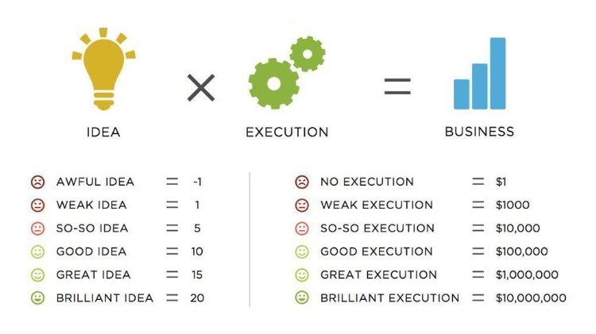
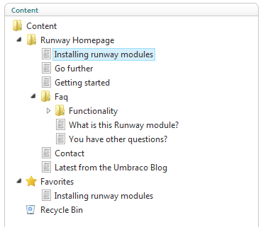
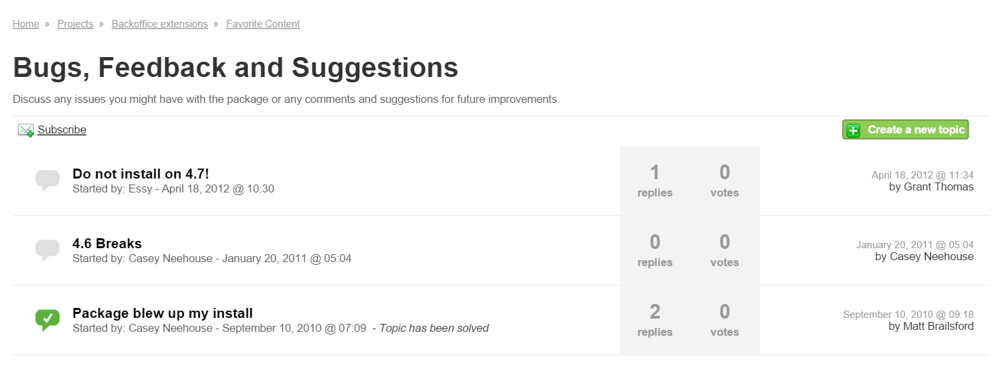
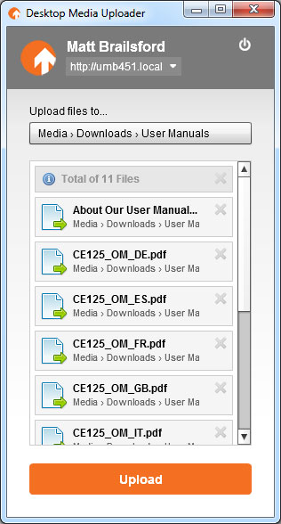
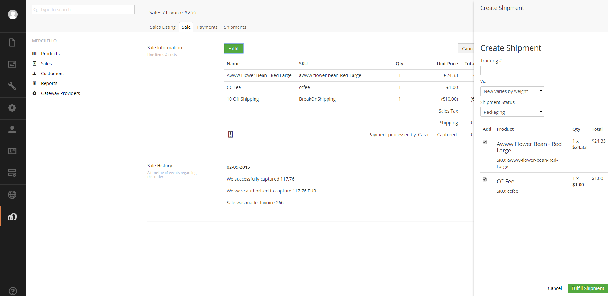

How to develop
a killer package
Lee Kelleher / Matt Brailsford
Who are we?
Lee Kelleher
Umbrella Inc
Matt Brailsford
The Outfield
You may
remember us from...

What this talk is NOT about
How to develop a killer package
1. Killer Ideas!
2. Things you shouldn't do!
3. Things you should do!
Think!
What are your motivations?
Share!
Discuss your ideas with others
Ideas are a multiplier of execution

sivers.org/multiply
Is it a better idea
for the Umbraco core?
Think outside the box
Editor's Manual
uHangout
Skrift.io
Don't write hacky code
Case in point...
"Favourite Content" package

Favourite Content hacky code

Don't use fancy tech
Case in point...
"Desktop Media Uploader" package

Don't force a framework
Show of hands...
Who actively uses Dependency Injection?
Don't chase the karma*
* yes, we see the irony
GIVE IT THE RIGHT NAME
- Make it short
- Make it relevant
- Make it easy to spell
- Avoid gimmicks
MAKE IT EASY TO INSTALL
Our Umbraco (NuGet/MyGet)
Automate config settings (Package Actions)
MAKE IT A CONSISTENT DESIGN
Case in point...
Merchello

DOCUMENT IT
README file
Markdown,
HTML,
PDF,
Word doc,
etc...
GitHub Pages
readthedocs.org
OPEN SOURCE IT
F.U.D.
GitHub, Bitbucket, CodePlex
AUTOMATE IT
AppVeyor, TeamCity, build script
GET COMMUNITY SUPPORT
Case in point...
uComponents
SUPPORT IT
Be prepared for support
PROMOTE IT
YouTube videos
Collaboration
uHangout
Skrift.io
Twitter
EVOLVE IT
Keep refining your ideas
Get others involved in the project
Invest time
Stay classy!
IN SUMMARY
Learn the basics
Think
Share
Invest
Support